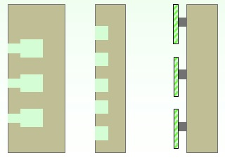
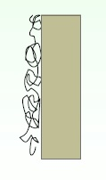
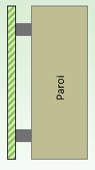
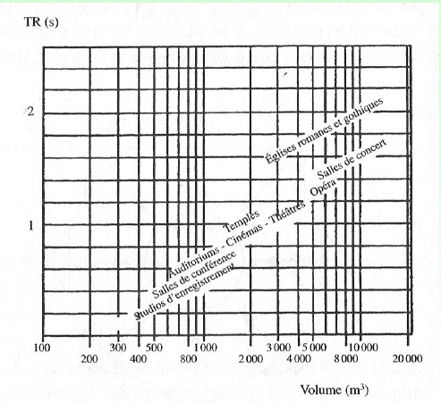
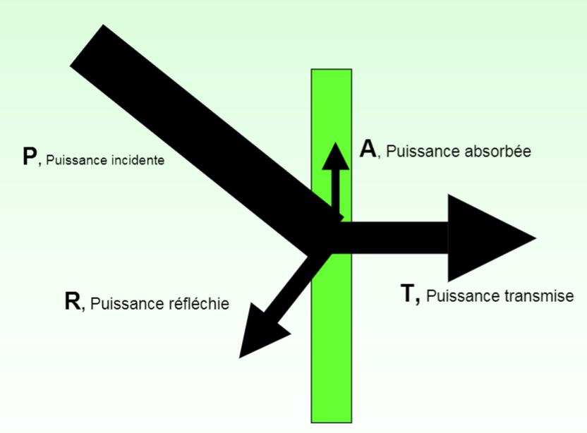

III: Notions d'acoustique
L'isolation phonique d'une pièce
Dans une
chambre acoide, on ne peut pas tenir plus de 45 min car elle absorbe 99% du son.
Il est très dur de garder l'équlibre. Selon son créateur Steven orfield, On peut entendre les bruits de notre organisme (l'air qui circule dans nos poumons, les battements de
coeur, les bruits de nos articulations). La chambre acoïde peut être utilisée pour mesurer précisément la quantité de son émise par un objet. Par exemple dans le cas de la
recherche et développement en industrie, on peut s'en servir pour voir si un produit est homologuable en fonction de la quantité de son qu'il émet.
De la chambre acoïde à un studio d'enregistrement, en fonction de l'utilisation de la salle, on peut avoir recours à différentes méthodes d'isolation.
Le tableau ci-dessous nous montre les différents moyens pour absorber certaines classes de fréquences.
| Schéma |
Descritption |
Fréquences absorbées |
|  |
le résonateur de Helmotz peut absorber les médiums. Ils sont constitués de cavités de diférente taille pour absorber une plus grande base de fréquence. |
Absorbe entre 300 Hz et 1 kHz |
|  |
Pour les aigus on peut utiliser l'efet de frottement entre le son et des fibres avec par exemple de la laine de verre. Plus les fibres sont poreuses et plus il y a de surface de contact, plus l'absorption des aigus sera efficace. |
absorbe les fréquences de plus de 1 kHz |
|  |
Pour les sons graves, on se servira de l'effet de panneau: des plaques (hachuré en vert sur le schéma) généralement en bois ou en platre sont placées à une certaine distance de la paroi. Le panneau et l'air situé derrière celui-ci entrent en vibration. |
absorbe les fréquences en-dessous de 300 Hz |
Ensuite on peut définir pour cette salle l'aire équivalente d'absorption A en m² à l'aide de la formule suivante:
A=Σ α
is
i avec α coefficient d'absorption alpha sabine qui varie en fonction du matériau et de la fréquence, s qui est la surface en m
2 des surfaces de la salle c'est a dire le mobilier, les usagers, plus généralement tout ce qu'elle contient.

Le tableau ci-dessus représente les temps de réverbération optimaux en fonction du volume de la salle ainsi que de son utilisation.
La résonance et les différents matéiaux face au son
Les matériaux possèdent tous une réaction différente face à une onde sonore. Certains absorbent plus qu'ils ne renvoient et inversement.

à partir du schéma suivant, on peut voir : une onde sonore incidente P avec une intensité en dB. Cette onde est simultanément réfléchie (R), absorbée (A) et transmise (T).
On part du principe que P = 1.
On a donc 1 = α + τ + ρ avec α coefficient d'absorption acoustique, τ coefficient de transmission acoustique et ρ coefficient de réflexion
acoustique.
α = énergie absorbée / énergie incidente
τ = énergie transmise / énergie incidente
ρ = énergie réfléchie / énergie incidente
à partir des caractéristiques des matériaux, on peut trouver la résonance d'une pièce.
La résonance ou réverbération, est la persistance d'un bruit dans un local après arrêt de la source. Plus précisément, c'est le temps mis par le son pour décroitre de 60 décibels
dans la salle après arrêt de la source.
Si la différence de temps entre le trajet direct de l'onde (source → réception) et le trajet dérivé de celle ci (source → mur → réception) dépasse 0.05 seconde, le cerveau
percevra deux sons distincts.
On peut calculer le temps de résonance d'une pièce à l'aide de la formule de sabine: TR = O.16x
V⁄
A .
TR correspond au temps de réverbération, V au volume de la pièce en m
3 et A à la surface d'absorbtion de la pièce en m² soit A=Σ α
is
i.
Les techniques d'isolement passives et actives
Il y a un temps de réverbération optimal en fonction de l'utilisation d'une salle et de la musique jouée. Il y a deux techniques d'isolement reposant sur deux principes différents: la méthode active permet une correction en temps réel du temps de réverbération.Les murs de la salle ont un coeefficient d'absorption égal à 1 donc elles ne réverbèrent rien. le son est capté par des micros puis renvoyé à l'aide de hauts parleurs avec un léger délai que peut faire varier l'ingénieur du son en fonction dece qui est joué. Cette méthode est réservée aux grandes salles de spectacles car elle est onéreuse. La méthode passive est plus répandue car moins chère. elle repose sur l'optimisation de la salle. Par exemple des panneaux sur les murs pour absorber les graves (cf schéma et formule), des dalles avec un coefficient d'absorption proche de 0 au dessus de la scène pour renvoyer le son émis en direction des spectateurs